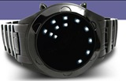

TOKYOFLASH!
04 December 2008
I think Tokyoflash has the coolest watches ever. They're kinda high-tech and futuristic-looking and imported from JAPAN! We all know Japan makes the coolest shit.
 The watch on the right is called the S-Mode Oberon. It's the one I got after I broke my G-shock watch. The outer ring is hours, inner most ring is tens digit of the minutes, and the one in the middle is the ones digit. When I first got it, it took forever to figure out what time it was but then I got used to it. Its cool because other people can't tell what time it is. It's probably the coolest watch I ever had minus this Power Rangers watch I had when I was little.
{kind=link}
Check it out in action (skip to 2:30):
But I broke the strap it some freak freebording accident and I still haven't gotten it fixed. I'll probably get it fixed over the winter break(SNOWBOARD 08!!!!!!) or maybe I'll just give it to my brother as a present. I want to get another one but they're so freaking expensive.
I hate not having a watch and not knowing what time it is.